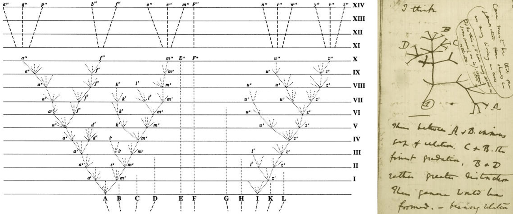

3 Evidence for Evolution
DRAFT 20250113
In the previous chapter we discussed what evolution is, how it is effectively an emergent property of any system that satisfies a set of four criteria (population, variation, heritable similarity, sorting process), that evolution is the only valid scientific explanation that explains the diversity of life on this planet, and that evolution is more than a scientific theory, that it is in fact a paradigm.
So what is this overwhelming evidence for evolution? Why are we so convinced, as scientists, that evolution is indeed a fact, one of the few in the biological sciences? In this chapter we will briefly describe the incredibly varied lines of evidence for evolution. We will not go much into detail into any one piece of evidence, but we will present some specific examples to help make the case. Throughout the rest of the course we will discussing theory, processes, and data that will fill in a lot of the detail. In other words, this entire rest of this course can serve as evidence. And even then, this will not be an exhaustive description of all the evidence for evolution. To attempt to do that would be a Quixotic effort. Nonetheless, in this chapter we will review the main categories of evidence and provide a few favorite examples to help make them clear.
3.1 An introduction to the evidence
When Darwin’s ideas of evolution and natural selection were first proposed, they were indeed an hypothesis. Now they are considered “facts”, but there was a time when like any good scientific hypothesis, they required testing through the development of testable predictions that can be falsified with hard empirical data. Generally speaking, if we consider Darwin’s idea of descent with modification as a reasonable description (if not a definition) of evolution, then we find that there are five predictions that can be tested through experimentation and hard data:
- Species change through time (microevolution).
- Lineages split to form new species (speciation).
- Novel forms are derived from earlier forms (macroevolution).
- Species are not independent but connected by descent from a common ancestor (common ancestry and homology).
- Earth and life on Earth are old (deep time).
Though there may be numerous other predictions that come from Darwin’s hypothesis of common descent, the above list makes for a good starting point for organizing our discussions, a road map so to speak to summarize the evidence demonstrating evolution as the explanation for the diversification of life on earth.
But before we do this, we need to discuss a very important distinction of types of evidence, and that is a prediction versus a retrodiction.
• Prediction - if evolution is correct, then we could predict/anticipate some observed outcome or pattern. This is fundamentally consistent with what we consider to be a prediction in say a basic laboratory experiment, e.g. in chemistry if I mix chemical A with B the outcome will be C. In biology things get little more complicated, actually alot more complicated (which is what makes biolgy so interesting in my opinion), and can not always be tested in a laboratory setting. Nonetheless, we can use observations in nature to test predictions. For example, if common ancestry is correct, then we should find that species that have split more recently from each other should be more genetically similar to each other than they are to species that they are more distantly related to. So for example, we should find that humans and chimpanzees tend to be more genetically similar to each other than either are to say whales. A simple straightforward prediction derived from common ancestry.
• Retrodiction - This is strange sounding term that basically says that the observation may not necessarily be directly predicted by evolution, but that explaining the observed patterns make most sense in light of evolution. Some examples we will see below will be more retrodictions than based on predictions, for example biogeographic distributions, developmental patterns (comparative development), and vestigial structures, but nonetheless provide compelling evidence for evolution.
Before continuing with the evidence, I would like to point you to an excellent book by Jerry Coyne, one of the leading figures in modern evolutionary biology, entitled “Why Evolution Is True”. It is definitely worth the read. The only reason I do not assign it for my course is that we simply do not have the time to go over his book in the detail it deserves and get to the rest of what we need to discuss in one semester. Give it a look though.
This being our modern world, there are also a number of YouTube videos where Dr. Coyne presents his take on the evidence for evolution. The following is only one of many, but deserves a careful listen (HINT: start the video at the 3:35 mark, and feel free to stop it at the 51:05 mark, where he transitions into religion and evolution).
3.2 The Evidence
Categories of evidence for evolution
?sec-otherevidence
3.3 Microevolution
Microevolution is the change in inherited traits of a population from one generation to the next, ultimately leading to the accumulation of changes and the transformation of species through time. Heritable trait in this context can refer to any phenotypic trait (for example the average beak size in a population of a bird) or a molecular trait (e.g. the frequency of alternative alleles at a particular locus) or genomic variant (e.g. a copy number variant or an inversion polymorphism). While changes in most traits from one generation to the next are subtle at best, strong natural selection can lead to significant and detectable evolutionary changes in very short periods of time.
One way to think about microevolution is “observing change over time of a heritable trait”. This is effectively the definition of evolution, so any examples of observed change over time is by definition observing evolution.
A convenient way of discussing the various evidence out there (and there is a near infinite number of them) is to sort them into categories such as the following:
Natural Populations
Observing changes in natural populations directly or at least over historical time is powerful evidence for evolution: it is anagenesis in action. Over the decades there has been an incredible number of examples of populations changing over time published, and the number continues to increase every year. There are simply too many to cover in any detail here, so below is a very short list of some of the classic examples:
- industrial melanism in the peppered moth Biston betularia (Cook and Saccheri (2012)); recent studies has demonstrated the genetic basis of the melanic form (Hof et al. (2016); more recently Tian et al. (2024))
- the soapberry bug in Florida, which has shown changes in beak size over approximately 100 years, in response to changes in its preferred fruit size (Carroll et al. (2005)).
- the evolution of house sparrows in North America, which have exhibited changes in size and color over roughly 100 generations (Johnston and Selander (1964)).
- natural populations of the three spine stickleback Gasterosteus aculeatus. (see below)
Human-Driven Change: Resistance to drugs, insecticides, and herbicides offers a clear example of evolution in action. HIV’s resistance to treatments like AZT, and the shrinking size of fish due to commercial fishing pressures, are notable examples, as are changes that occur in invasive species when they colonize a new environment (Palumbi (2001)).
Change in the fossil record: Though much of the evidence for observed change over time comes from extant populations or populations that we can at least follow and observe over historical time, we also see these types of observed changes in the fossil record. Collecting this kind of data can be very work intensive, yet we still have a number of excellent examples. One of my favorites is an outstanding study on changes in a fossil assemblage of the sticklebacks from Bell and colleagues (Bell (2009)).
Fig A is a an example of a fossil stickleback. Fig B shows the change in the mean pelvic phenotype over time.
Artificial selection
Artificial selection is effectively the same as natural selection only we become the selecting agent. We decide who gets to survive and reproduce, with potentially profound impacts on the diversity of these organisms. What are talking about here is our impact on the evolution of our domestic crops, livestock, and pets, for which there are a vast array of examples in the literature.

Images from Understanding Evolution.
In fact, artificial selection (in particular breeds of dogs and pigeons) profoundly impacted Darwin’s thinking, using artificial selection as an analogy to natural selection and the extensive variation that existed in populations. In some cases artificial selection acting over generations can result in reproductive isolation, which can be the precursor to the formation of new species.
Experimental Populations
Experiments like Richard Lenski’s Long-Term Evolution Experiment (LTEE) with E. coli (Discover website) and laboratory studies with Drosophila (e.g. Burke and Rose (2009)), plus numerous others, have clearly demonstrated that we can demonstrate and study evolution in the laboratory with controlled studies.
For a particulary compelling visual example of experimental evolution in a labortory population of E. coli, check out the following video produced by the Kishony Lab at Harvard Medical School. They have designed a simple way to observe how bacteria evolve as they encounter increasingly higher doses of an antibiotic and adapt to survive—and thrive—despite of it.
You might say that bacteria are different. After all, assuming a generation time of 30 minutes, the two-week experiment described in the video represents over 670 generations of bacterial evolution. Translated to humans, that would represent about 17,000 years. Looking back that far in history, that was a time when humans exclusively lived as hunter-gatherers and just started to migrate into North America over the Bering Land Bridge…
A case study: rapid change and sticklebacks
One of the most persistent misconceptions about evolution is that it takes millions of years to occur. However, the reality is that microevolution—in principle—can happen in as little as one generation. Those short-term changes can be very hard to detect, because our measurement error of a trait of interest is often larger than the actual per-generation evolutionary change. Nonetheless, over the course of just a handful of generations, natural populations may exhibit significant evolutionary change that we can detect with high confidence using genetic markers (i.e., measuring changes in allele frequencies) or phenotypic measurements.
The convergence of ecological and evolutionary timescales is a relatively recent insight. Darwin did not think that we would be able to directly observe evolutionary change over short periods of time:
“We see nothing of these slow changes in progress, until the hand of time has marked the lapse of ages.”
— Darwin, 1859
However, with technological breakthroughs that improved the precision of measurements we take in natural populations and with scientists’ ability to track populations continuously through time, we have accumulated data across dozens of study systems—from microbes to vertebrates—documenting microevolutionary change within a few to a few dozen generations (see Hairston et al. (2005); CARROLL et al. (2007)). Here, Professor Tobler will briefly introduce you to evidence for rapid evolution gathered in one such study system (the threespine stickleback). In this chapter’s case study, you will explore another example based on a time series of beak size variation of a species of Darwin’s finch.
The Case of Threespine Stickleback
Threespine stickleback (Gasterosteus aculeatus; Figure 3.1)) are a widely used system to study evolution and have been shown to rapidly adapt to novel environmental conditions. Stickleback are primarily marine and inhabit coastal waters throughout much of the Northern hemisphere. They are small fish (usually less than 8 cm in length) that exhibit exquisite adaptations to avoid predation in their environment: the sides of their body are covered in bony plates, and they have spines associated with their dorsal and pelvic fins that, when spread out, can dissuade a predator from capturing or consuming them.

Since the last ice age, as glaciers retreated and left behind a plethora of new streams and lakes, stickleback have also colonized freshwater habitats, which differ in many ways from the original marine habitats. Freshwaters not only exhibit a different water chemistry, but they also tend to harbor fewer predators and different food resources. Over the past 10,000-20,000 years, stickleback in freshwater environments have evolved a number of phenotypic differences compared to their marine ancestors, including a drastic reduction of the armor plates along the body and—in some instances—a loss of the pelvic spines (Jones et al. 2012). Moreover, stickleback have also adapted to different niches within freshwaters, and there are distinct morphs in streams and lakes, and in benthic and pelagic habitats within lakes (Hendry et al. 2013). Different freshwater ecotypes exhibit distinct body shapes and colorations and are adapted to consuming different types of prey items.
So, how long might it take for the evolution of the traits that vary so drastically across different stickleback forms? Sure, 20,000 years is a blink of an eye in the history of life on the planet, but it is still an eternity for any researcher that might want to observe evolution in action.
One hint at how fast stickleback might evolve comes from a fascinating natural experiment. In 1964, the Great Alaska Earthquake brought widespread destruction to the region and literally reshaped the regional topology. For example, multiple islands in the Prince William Sound and the Gulf of Alaska were lifted up further out of the ocean, creating new freshwater ponds where previously were none. In the time since the earthquake, stickleback have colonized these new freshwater ponds, and within just 50 years, they have evolved similar phenotypic traits that we know from stickleback in continental freshwaters (Lescak et al. 2015). Hence, adaptation to freshwaters upon colonization from the ocean may occur in a matter of a few decades rather than gradually over thousands of years of evolution.
To get a better understanding of just how fast evolution may proceed, researchers from the University of Basel in Switzerland decided to conduct a field experiment using lake and stream stickleback (Laurentino et al. 2020). The researchers first sequenced the genomes of lake and stream stickleback to detect the genomic regions that are differentiated between ecotypes and likely contain the genes involved in shaping the phenotypic differences between them. After that, they generated F2 crosses between the ecotypes, which is like shuffling a deck of cards from a genomic perspective: individual F2 offspring essentially exhibit a random mixture of genomic segments from their lake and stream ancestors. If these F2 hybrids were introduced into a stream environment, it is predicted that individuals that exhibit stream alleles in regions of the genome important for the expression of stream-specific phenotypic traits perform better than individuals with lake alleles. At a population level, this should lead to an increase in the frequency of alleles characteristic for stream stickleback. And, this is exactly what happened when the researchers actually conducted the experiment. More importantly, the predicted genetic changes were detectable within just one generation of F2 individuals being released into a stream habitat. So, when selection is strong and researchers have the capability to measure changes in traits with adequate precision, we can actually detect the small, generation-to-generation changes that ultimately accumulate to give rise to more conspicuous evolutionary changes that are easier to detect.
3.4 Speciation
Speciation is the process by which new species arise. Before we dive into how speciation actually works, we should agree on what species actually are:
Note
Definition: Species
A biological species is a group of organisms that can reproduce with one another in nature and produce fertile offspring. Species are characterized by the fact that they are reproductively isolated from other such groups, which means that the organisms in one species are incapable of reproducing with organisms in another species. (As you may know, there are alternative definitions of a species, which we will discuss in more detail in Chapter 11.)
In phylogenetic trees, speciation is depicted as a singular point that represents the moment one lineage splits into two (red circle in Figure 3.2. Although speciation can occur instantaneously, for example when polyploidization is involved (see Chapter 11), new species typically evolve gradually, from a single variable population, to populations within a species that are differentiated but still connected through gene flow, to distinct species that are completely isolated from each other (Figure 3.2). Movement along this “speciation continuum” is driven by the accumulation of reproductive barriers that prevent individuals from mating or successfully producing offspring with each other. Importantly, movement along the speciation continuum can be bidirectional, and reproductive barriers can disappear such that two species merge back together into one. If speciation is a gradual process, we should be able to observe all stages along the speciation continuum in nature, not just the endpoints of the speciation process with reproductively isolated species.

Ring Species
One phenomenon that perfectly illustrates the speciation continuum and provides evidence for ongoing speciation are so-called ring species, in which two reproductively isolated populations living sympatrically (red and brown in Figure 3.3 are connected by a geographic ring of populations that can interbreed. Such ring species arise when an original population disperses around a geographic barrier, and populations diverge gradually, for example as a consequence of adaptation to local environmental conditions. Once populations come into sympatry again behind the geographic barrier, sufficient differences have accumulated such that populations cannot interbreed with each other anymore.

Several well-studied examples of ring species exist. For example, plethodontid salamanders of the Ensatina eschscholtzii complex have colonized different parts of California from the north and expanded southward around the Central Valley, which represents unsuitable habitat for salamanders. At the southern tip of the Central valley, salamander populations from the eastern and western mountain ridges that surround the valley came into secondary contact and are unable to interbreed due to the genetic changes that have accumulated during evolution in isolation (Pereira et al. 2011). Other examples of ring species include the herring and lesser black-backed gulls (genus Larus) that have a circumpolar distribution and cannot interbreed in northern Europe. In addition, greenish warblers (Phylloscopus trochiloides) form a ring species around the Himalayas (Irwin et al. 2005).
Catching Speciation in Action
Evidence for ongoing speciation also comes from a wide variety of study systems that do not occur in a ring. Especially when populations are subject to strong natural selection (for example if they inhabit different habitat types), we do not only observe adaptive differentiation across populations but also the inadvertent emergence of reproductive isolation. As populations acquire traits that make them better suited to the environments they inhabit, individuals also tend to stop interbreeding with individuals from different populations that have different traits. This is called ecological speciation, and we explore this concept in more detail in Chapter 11. As a consequence, we can often find populations along various stages of the speciation continuum.
Timema stick insects are a great example. These insects are distributed in the western United States, and different species of Timema have adapted to live and feed on different host plants. While most species are uniformly green, gray, or brown and live on broad-leaved host plants, several species have independently evolved a dorsal stripe that provides camouflage on needle-like leaves, providing protection from predators Figure 3.4. In at least one species, T. cristinae, both uniformly colored and striped populations exist depending on whether they live on host plants with broad or needle-like leaves. While these phenotypic differences within T. cristinae parallel differences between other Timema species, reproductive isolation between different T. cristinae populations utilizing alternative host plants is still incomplete (Nosil 2007). Hence, the different ecotypes represent intermediate stages of speciation. Similar variation along the speciation continuum has been uncovered in a wide variety of other natural study systems, and we will get to know some of them in more detail later in the book.

A more recent and very impressive study on the order Phasmatodea, which includes stick and leaf insects (Boisseau, Bradler, and Emlen (2024)), has demonstrated that similar environmental conditions experienced by various species plus the time since divergence can predict the level of morphological convergence, demonstrating that evolution can be surprisingly predictable even when lineages have been evolving independently for tens of millions of years.
3.5 Macroevolution
When discussing evidence for microevolution and speciation, we primarily turned to evidence from observations of living forms and from experiments. Here, we will consider a different type of evidence, fossils, which are simply the remains of prehistoric organisms. Fossils are usually petrified or preserved as a mold in rock, although the rapid thawing of permafrost accelerated by climate change has also revealed frozen fossils with amazing preservation of soft tissues (for example, check out this story about the recent discovery of nun cho ga, a baby woolly mammoth). The mere fact that fossils exist and often represent forms that are distinct from any organisms alive today (Figure 3.5) is testament to the ever-changing faunas and floras that have inhabited Earth through time. The fossil record also teaches us that extinction is an important aspect of evolutionary change, just as the generation of novel forms.
Note
Explore More
If you are interested in learning more about what fossils teach us about evolution, I highly recommend Donald R. Prothero’s book “Evolution: What the Fossils Say and Why It Matters”.
Geographic and Temporal Patterns of Succession
Perhaps the strongest evidence fossils provide for Darwin’s notion of evolution is that they are not randomly distributed, neither in terms of geography nor time. The constant cycle of descent with modification and extinction has created predictable patterns in fossil deposits across the planet, which is evident as a succession of novel forms that are derived from earlier ones.
Patterns of succession are evident geographically, because there tends to be a regional correspondence between fossils and living forms. That is, we tend to find fossil relatives of extant species in the same areas where extant species live today. For example, marsupial fossils are particularly common in Australia just like living marsupials today. This is also reflected in the biogeographic distribution of extant forms, which frequently tracks the changing landmasses driven by continental drift. Marsupials are not only found in Australia but also South America, which were once connected through Antarctica in a large landmass called Gondwana until about 140 million years ago. The non-random distribution of fossils means that we can develop hypotheses and test predictions about the fossil record. For example, if the biogeographic distribution of marsupials was the consequence of a once contiguous distribution on Gondwana, we would predict the presence of marsupial fossils on Antarctica, which have indeed been found (Woodburne & Zinsmeister 1982).
Patterns of succession are also evident temporally, with fossils exhibiting more ancestral traits being found in older layers of rock compared to derived forms. Subsequently deposited rock layers can therefore shed light into the temporal dynamics of trait evolution and reveal entire time series that connect forms with disparate phenotypes. For example, we know that horses with their single hoof descended from multi-toed ancestors, because we have a time series of horse fossils that illustrates the toe reductions through time (Figure 3.6).

Transitional Fossils
If novel forms are indeed descendants from earlier forms, the fossil record should capture evidence of what Darwin called the “transmutation of species”. Hence, we should be able to find transitional fossils that exhibit traits common to both an ancestral group and its derived descendants. The first, and perhaps still one of the most spectacular, transitional fossil ever found was Archaeopterix (Figure 3.7), which shared traits with Mesozoic dinosaurs and modern birds. Its jaws contained sharp teeth, and it has wings with fingers and claws, a long bony tail, hyperextensible second toes (like Velociraptor’s), and feathers. Hence, Archaeopterix represents a transitional fossil between modern birds and non-avian dinosaurs (Ostrom 1976). Similar transitional fossils have been discovered to link the transition from aquatic to terrestrial vertebrates (Tiktaalik Section 3.9), from marine mammals to their terrestrial ancestors (Pakicetus, Ambulocetus, and Remingtonocetus), and from quadrupedal to bipedal hominids (Australopithecus afarensis), among many others.
An extremely important aspect of transitional forms is where they are found in the fossil record. If evolution is correct, then transitional forms should always be found in geologic strata that dates between the ancestral and derived fossil species. If we were to find a transitional form that either predates the ancestral fossils or post-dates the derived fossil species, that would raise some serious questions about the nature of the transitional form.
It is not just the presence of transitional forms, but where in the fossil record they are found. To date, there has yet to be a single reported example in the literature where a transitional form is found inconsistent with our expectations. This is exceptionally solid evidence for evolution.
3.6 Common Ancestry and Homology
A key prediction of Darwin’s notion of evolution is that species are not independent but connected by descent from a common ancestor. Phylogenetic trees (Figure @ref(fig:ithink)) are representations of that connectedness, and if we were to travel back in time toward the root of the phylogenetic tree, we would expect lineages to merge into the origin of life, the original being from which all living forms descended (also known as the last universal common ancestor, or LUCA). In the absence of time travel, the critical evidence for common ancestry of all life is homology.
Note
Definition: Homology
Homology is the similarity of the structure, physiology, or development of different species based upon their descent from a common evolutionary ancestor.
Homology explains why all forms of life share certain characteristics. All forms of life, from microbes to plants and animals, share the same molecular building blocks: lipids that form the boundaries of cells and organelles, nucleic acids that encode information, proteins that play both structural and catalytic roles, and glycans that serve structure, energy storage, and regulatory purposes (Marth 2008). Different life forms, even those separated by billions of years of evolution, share these building blocks because they inherited them from a common ancestor.
Homologies also occur at a more narrow scope. For example, Darwin was puzzled by the structural similarity in the forelimbs of terrestrial vertebrates even though they serve entirely different functions (Figure 3.8):
What could be more curious than that the hand of a man, formed for grasping, that of a mole for digging, the leg of a horse, the paddle of the porpoise, and the wing of a bat, should all be constructed on the same patterns, and should include the same bones, in the same relative position?
— Darwin, 1859
How do these similarities in structure arise? Again, it is because all terrestrial vertebrates inherited this shared limb structure from their common ancestor. Rather than “inventing” different types of forelimbs for different purposes (grabbing, running, flying, swimming), evolution has gradually modified and repurposed existing forelimb structures for new functions.

Homologies occur in nested sets. Closely related species exhibit a higher number of homologies, because they inherited those traits from a shared ancestor. More distantly related taxa exhibit differences in their traits, because they have been on independent evolutionary trajectories for prolonged periods of time. Accordingly, analyses of homologous structures are used to infer phylogenetic relationships among taxa. We group species that share a lot of homologous traits closely together on a phylogenetic tree, while those that share few are further apart (see Chapter 7 for more information).
Note
 Important Note
Important Note
Not all trait similarities are the consequence of homology. Analogy in biology describes similarity of function and superficial resemblance of structures that have different origins. For example, the wings of a fly, a moth, and a bird are analogous, because they evolved independently as adaptations to a common function (flying). Analogies are a consequence of convergent evolution, where unrelated lineages evolve similar traits, typically as adaptations to similar lifestyles or environmental conditions.
Vestigial Organs
Vestigial organs are rudimentary traits that lost some or all of the ancestral functions of the structure. Classic examples of vestigial organs in humans are the appendix (vestigial caecum), the coccyx (vestigial tail), and some muscles connected to the ear, which allow for ear mobility in other primates. Structural vestigial organs in other animals include remnants of limbs that are still expressed in some whales, snakes, and flightless birds (Figure 3.9).

One of the most fascinating examples of vestigiality comes from Mexican cavefish (Astyanax mexicanus) that are eyeless and completely blind as adults (Figure @ref(fig:astyanax)). Cavefish actually start growing eyes during embryonic development, and the lack of eyes in adult fish is a consequence of the abortion of eye development within the first few days of the growing embryo. The eye in this case is a developmental (rather than a structural) vestigial organ that makes a transient appearance during certain embryonic stages. More importantly, cavefish actually possess all the genes required for the normal development of an eye. It turns out, eye abortion is initiated by signaling factors associated with the developing cavefish lens. Transplantation of a surface fish lens into a developing cavefish leads to the normal formation of an eye, just like transplantation of a cave fish lens into a surface fish embryo leads to eye abortion (Krishnan and Rohner 2017). If cavefish had originated independently, there would be no need for evolution to “create” the developmental machinery for eye development. Cavefish have that machinery because they lost eyes secondarily and inherited all the information for making an eye from their eyed surface ancestors.
Atavisms
Related to vestigial organs, atavisms are the reappearance of an ancestral trait or characteristic in an organism after several generations of absence. This phenomenon occurs when genes for previously existing phenotypic features are preserved in DNA and become expressed through mutations or changes in gene regulation. Some examples include:
- Whales and dolphins with hind limbs: Some cetaceans have been found with vestigial hind limbs, reminiscent of their land-dwelling ancestors (e.g. HALL (1984)).
- Chickens with teeth (this one is a little creepy): A mutation in chickens can lead to the development of cone-shaped crocodile-like teeth, reflecting their common ancestry with reptiles (Harris et al. (2006)).
- Humans with tails: Rarely, infants are born with vestigial tails, a trait present in our distant primate ancestors (Tomić and Meyer-Rochow (2011)).
- Horses with extra toes: Occasionally, horses are born with additional toes, resembling their multi-toed ancestors (Tyson et al. (2004)).
Atavisms provide strong support for the theory of evolution for several reasons. (1) They demonstrate that genetic information can be retained but not expressed for many generations, showing the continuity of genetic material through evolutionary time (Genetic preservation); (2) Atavisms often reveal traits shared with ancestral species, supporting the idea of common descent; and (3) They highlight the role of gene regulation in evolution, showing how changes in gene expression can lead to the reappearance of ancestral traits (Developmental plasticity).
Atavisms are powerful evidence for evolution, perhaps more a retrodiction than prediction. Nonetheless, by revealing these evolutionary throwbacks, atavisms offer tangible evidence of the genetic and developmental links between modern species and their ancestors, thereby strengthening the case for evolutionary theory.
Molecular and genomic evidence of shared ancestry
Some of the strongest evidence for evolution comes from molecular and genomics data, with much of it falling into the category of shared ancestry. In fact, if there were no other evidence for evolution, if there we no fossil record from which to draw, the evidence from the fields of molecular biology and genomics would alone prove evolution as the only explanation for the diversity of life. An entire field of research has emerged called molecular evolution, more recently rebranded as evolutionary genomics due to the staggering amount of DNA (and soon to be protein) data that we can now collect quickly, efficiently, and accurately. Molecular and genomic data is not only providing irrefutable evidence for evolution, it is also providing unique and exciting new insights into how evolution works.
In light of the above paragraph, what I am about to write should not come as a surprise; that the amount of evidence from molecular and genomic research is simply too vast to cover adequately, too overwhelming for this OER. I would point to advanced courses in the fields of molecular evolution and evolutionary genomics, and encourage you to explore the deep literature out there in the numerous scientific journals and books being published near daily, to really get a sense of the breath taking progress being made in these fast moving fields and the vast treasure trove of evidence coming from them. Nonetheless, it certainly is worth reviewing some of this evidence provided by molecular/genomic data, with the understanding that what we are about to discuss is but a small taste of what is in the literature. Later in this section we will discuss additional examples from molecular/genomics research that support other types of evidence. For now, we focus on those researches that fall under th category of common ancestry.
That being said, we will confine our discussion to the following:
Other fundamental conserved molecular mechanisms and biochemical/physiological pathways
Biochemical, physiological, and developmental pathways that are shared across broad swaths of life. For example, a recently the conserved role of microRNA mir-193 in controlling melanic coloration in insects, demonstrates evolutionary continuity. Or the role of HOX gene clusters in driving development and morphological structures in complex Eukaryotes.
On a more fundamental level, the sharing of mitochondria adn their role in the production of ATP to drive cellular processes in just about all Eukaryotic lineages, or the sharing of chloroplasts in plants.
Note
Horizontal gene transfer: Recognition of horizontal gene transfer events has expanded our understanding of evolutionary processes beyond vertical inheritance[9]. Yet even then, we can follow patterns of inhertiance after HGT that are due to sharing a common ancestor.
Levels of divergence
The ability to sequence and compare genomes across species has clearly demonstrated that levels of sequence divergence are exactly as expected from divergence from common ancestry. The more closely related two taxa are from each other (from an evolutionary perspective, i.e. sharing a more recent common ancestor), the more similar they are in terms of DNA sequence divergence. The further apart, the more divergent. We see this not just at the level of DNA and protein sequence divergence, but also at “higher” levels of genomic and chromosomal organization and structure.
Pseudogenes: molecular vestigial structures
Pseudogenes represent some of the strongest evidence out there for common ancestry. Just their very presence in genomes demands an evolutionary explanation, for how else could we reasonably explain their distribution among taxa and their persistance in most Eukaryotic genomes.
Pseudogenes are inactive copies of functional genes in the genome and represent another kind of evolutionary “flaw”. Pseudogenes can arise from two processes: (1) via a complex process generally referred to as gene duplication, which leads to what is referred to as classical pseudogene; (2) when processed messenger RNA (mRNA) is reverse-transcribed and inserted back into the genome, refrred to as a processed pseudogene. Reverse transcription is typically associated with retrotransposons or the activity of retroviruses in cells. Because processed mRNAs lack introns and other genetic elements important for transcription and translation, the complimentary DNA (cDNA) that is built back into the genome ends up being functionless. In the case of a classical pseudogene, once there is more than one copy of a gene in the genome, if the organism only requires one copy of the gene without an impact on the fitness, one of the copies can begin to accumulate mutations over time that can effectively knock the gene out for some reason. Hence, pseudogenes essentially represent junk DNA (though I really disike that term) invisible not only to the cellular machinery responsible for protein synthesis, but for natural selection as well.
The reason that pseudogenes are invisible for natural selection is that generally speaking they make no contribution to the phenotype of an organism, neither good or bad. While copy mistakes (i.e., mutations) that impair the function of normal genes are usually eliminated by selection, similar mutations in pseudogenes have no effect and just linger around. As generations pass, pseudogenes consequently tend to accumulate more and more mutations compared to the original functional gene they originated from. Since mutations in the genome occur at predictable rates, we can compare pseudogenes to their functional equivalents to estimate when pseudogenes first arose. Conducting such analyses for pseudogenes in the human genome revealed that some of them are really old—much older in fact than the human species. This suggests that those pseudogenes must have arisen in an ancient ancestor, which we share with other closely related species. If this is the case, we should be able to find the same pseudogenes in other primates, but only those that have diverged from a common ancestor after the origin of the pseudogene. (See the section on mapping characters on a phylogeny for further information on this logic.)
Important
Recently there is increasing evidence that pseudogenes are actually not non-functional in the sense that they “do nothing”. Many pseudogeens are in fact transcribed, but no longer make functional mRNA for the original gene products they are derived from. It is not uncommon at all to find pseudogenes that code for various kinds of other functional RNAs, like miRNA, snoRNA, and lncRNAs, that serve important roles in regulating gene expression and other cellular processes. There is also some evidence that pseudogenes may impact gene expression levels. Nonetheless, this does not change the fact that there are clear patterns of pseudogenes shared among lineages due to the sharing of a common ancestor.
Friedberg and Rhoads (2000) put this hypothesis to the test (Table 2.1). The oldest pseudogene they investigated (CALM II 𝛙3), which has an estimated age of about 36 million years (Myr) based on the mutational difference from the functional equivalent, is found in all five species of primates that they investigated (including divergence times between 8 and 36 Myr). In contrast, the youngest pseudogene (𝛂-Enolase 𝛙1; 11 Myr old) is only found in chimpanzees and gorillas, the only primates that have diverged from the human lineage less than 11 Myr ago. Overall, the pattern of the presence and absence of pseudogenes is consistent with common ancestry. There is no reason for species to evolve the same pseudogenes independently in a predictable pattern. Rather, species share these “flaws” simply because they were passed down from one generation to the next, even as lineages split and formed new species.
| Chimpanzee | Gorilla | Orangutan | Rhesus | Capuchin | Hamster | |
|---|---|---|---|---|---|---|
| 8 Myr | 9 Myr | 16 Myr | 25 Myr | 36 Myr | >85 Myr | |
𝛂-Enolase 𝛙1 11 Myr |
+ | + | - | - | - | - |
AS 𝛙7 16 Myr |
+ | - | + | - | - | - |
CALM II 𝛙2 19 Myr |
+ | + | + | - | - | - |
AS 𝛙1 25 Myr |
+ | + | + | + | - | - |
AS 𝛙3 25 Myr |
+ | + | + | + | - | - |
CALM II 𝛙3 36 Myr |
+ | + | + | + | + | - |
There are numerous other examples of pseudogenes in the literature, more than can be given justice here. However, a few of my favorites include:
L-gulano-g-lactone oxidase gene (GLO), required for vitamin C synthesis (discussed in the Coyne video)
olfactory receptors (OR), where something along the line of thousands of functional ORs are found in mice and dog genomes, but only around 400 functional ORs are found in humans, plus an additional 400 OR pseudogenes homologous with those found in mice or dogs. It is even more interesting in the Cetacea, dolphins and whales, where some 80% of ORs are pseudogenes (referenece needed).
- hemoglobin in Antarctic icefishes (e.g. O’Brien (2016) ).
Structural variants and other genomic regions
- sharing of classes of transposable elements and sharing insertion sites in the genome following the sharing of MRCA

- distribution and evolutionary pattern of members of gene families
- distribution and evolutionary pattern of Copy Number Variants (CNV)
These molecular and genomic findings collectively strengthen the evidence for common descent, natural selection, and the gradual accumulation of genetic changes over time, all key components of the Theory of Evolution.
Why Homologies Matter
The fact that evolutionary novelties occur in nested sets as predicted by descent with modification provides strong evidence for common ancestry. The finding also has far reaching implications, because it underlies all biomedical research and applications. The reason we can study DNA repair mechanisms in bacteria to learn about their role in cancer development is because DNA repair mechanisms in bacteria and humans are homologous. The reason we can study cell cycle regulation in yeast is because both yeast and humans inherited the same regulatory machinery from a common ancestor. The reason we can study drug responses in rodents is because the physiological processing of many substances is mediated by homologous pathways in rodents and humans. And we can gain insights about neurophysiology and psychiatry from other primates, again because we all inherited our neurosystem from a common ancestor. The reason evolution is the unifying theory of biology is because it provides the critical framework for comparative studies among species, helping us to make sure that we are actually comparing apples to apples (i.e., homologous structures). If not, inferences from comparative analyses can be deeply flawed.
3.7 Biogeography
Patterns seen in the distribution of species both on a macro- (broad scale) and micro-level had been well recognized since before Darwin published OTOS. For example, the similarity and differences in species across continents such as marsupials in Australia while placental mammals dominated the rest of the world, or the deserts of Africa and of the Americas which harbor species that were superficially similar in form but showed other more fundamental differences, were well recognized. Even on smaller scales, for example the unique characteristic of island fauna and the relationship of island fauna to nearby continental or other island regions, were also increasingly being described. In both cases these patterns of species distributions were being descibed yet difficult to explain under the natural theistic explanations that dominated western science at the time.
Darwin knew of these distribution patterns, He had observed some directly and read extensively about these and similar patterns, and thought long on what might explain these types of observations. His explanation, which took up two entire chapters in the OTOS (evidence of how important he thought it was), provided an evolutionary explanation of the geography of life. His original evolutionary explanation was largely correct when first proposed, and has only been refined and supported by a multitude of later studies. Since then molecular studies demonstrating the relationship of species both within and among regions has only further solidified the evidence of biogeographic patterns as evidence for evolution
3.7.1 Continental scale
Some examples of macrogeographic evidence are:
- Similar ecosystems on different continents often harbor species that look the same. They occupy similar niches in the two continental systems, but clearly are very different in terms of sharing of a common ancestor. The most famous example of different species filling similar roles involves is the marsupial mammals, now found mainly in Australia (the Virginia opossum Didelphis virginiana is a familiar exception), and placental mammals, which predominate elsewhere in the world (you probably discussed this extensively in your high school biology courses and in BIO114). The two groups show some important anatomical differences (most notably in their reproductive systems, where almost all marsupials have pouches and give birth to very undeveloped young, while placentals have placentas that enable young to be born at a more advanced stage) and represent two very different lineages that diverged approximately 160 million years ago (Ma) during the Jurassic period. Nevertheless, in other ways some marsupials and placentals are astonishingly similar looking. There are burrowing marsupial moles that look and act just like placental moles, marsupial mice that resemble placental mice, marsupial anteaters which do exactly what South American anteaters do, and a marsupial wolf Thylacinus cynocephalus, also known as the Tasmanian wolf or Tasmanian tiger, which is strikingly canine-like appearance and served the same ecological niche as mammalian wolves.
Descent with modification predicts that organisms will be most similar in regions representing places of origin and subsequent dispersal. For example, descent with modification predicts that organisms in African tropics will be more similar to organisms in African deserts than to organisms in South American tropics because they are more likely to share a common ancestor. As discussed in Coyne (), we see this in many desert plants are succulents: they show an adaptive combination of traits that include large fleshy stems to store water, spines to deter predators, and small or missing leaves to reduce water loss. But different deserts have different types of succulents. In North and South America, the succulents are members of the cactus family. But in the deserts of Asia, Australia, and Africa, there are no native cacti, and the succulents belong to a completely different family, the euphorbs. You can tell the difference between the two types of succulents by their flowers and their sap, which is clear and watery in cacti but milky and bitter in euphorbs. Yet despite these fundamental differences, cacti and euphorbs can look very much alike.
Another body of evidence can be found in the existence of similar, yet distinct, species inhabiting comparable environments across different continents. For instance, the red deer of Northern Europe and the North American elk share a striking resemblance. Similarly, the Pipidae family of tongueless aquatic frogs can be found in both South America and Africa. These distribution patterns would be perplexing if the continents had always been in their current positions. These animals would have no way to traverse the vast oceans.
However, the theory of continental drift clarifies this phenomenon. Ancient land bridges, such as the Bering Land Bridge connecting Asia and North America, facilitated the dispersal of these species. Once these species established themselves in new territories, they underwent evolution, leading to the diversity we observe today.
- Another prediction of evolution is that species in a particular region should be descendants of earlier species that inhabited the same area. This prediction is supported by fossil records. For example, fossil wambats that most closely resemble modern wambats are found exclusively in Australia. Similarly, the unique armadillos of the Americas, with their bony armor, have fossil relatives called glyptodonts, also exclusive to the Americas. These glyptodonts were massive, armored herbivores that resembled oversized armadillos.
3.7.2 Smaller scale, microgeographic patterns of similarity in island chains
On a smaller, island-like scale, descent with modification successfully predicts explains a number of observed patterns:
- island fauna and flora tend to be subsets of those found on nearby continents, though the distribution of species tend to be unbalanced. For example, we usually find island systems having plants, birds, insects (flying mostly), and bats that are quite similar to nearby continental ecosystems, while oftentimes completely lacking amphibians, mammals (except bats), reptiles, and fish. Of course this is not always the case as it depends on the distance of the islands from the mainland, the surrounding oceanic currents, and the dispersal ability of the species (in addition to pure luck).
- island fauna are more similar to adjacent mainland forms, even when environments differ, than they are to island forms from other regions (even when environments the same).
- patterns of similarity among island forms within a chain (e.g. archepelegoes like Hawai’i) often conform to patterns of origins and distributions of islands – i.e., patterns of similarity among organisms follow those predicted based on when islands originate, when they could be colonized, etc. Spectacular examples of these include the Honey-creepers of the Hawai’in islands (and numerous other species as well), and of course the mockingbrids of Darwin fame in the Galapagos.
3.7.3 Summarizing biogeographic evidence
The main lesson from biogeographic patterns is that evolution provides the only explanation for the distribution and diversity of life on continents and islands. It is a mixture of both prediction and retrodiction, consistent with and explained by how evoution works.
Today these patterns of distribution in species within and among continents and island systems are only reinforced by the deluge of molecular data in the form of levels of sequence divergence and phylogenetic trees. It is an absolutely overwhelming body of evidence, seeming to increase in number near exponentially on a yearly basis. In these types of studies, the levels of sequence divergence and the evolutionary relationships shown by phylogenetic analyses are usually consistent with the patterns observed from morphological and species distribution data across various geographic scales.
The theory of Plate Tectonics (only recognized and accepted by the scientific community in the mid-to-late 1960s), which unified earlier concepts like Alfred Wegener’s continental drift (proposed in 1912) with new geological evidence, provided a comprehensive explanation for Earth’s geological processes which proved to be consistent not only with observed species distribution patterns, but also the observed levels of sequence and phylogenetic divergence (phylogeographic patterns).
Taken as a whole, it is unarguable that biogeographic and phylogeographic patterns provide strong evidence for evolution.
3.8 Deep Time
The last prediction of Darwin’s idea of descent with modification is that Earth and life on it are old. The study of the age of Earth and the universe is not really a subject of biology (hence, I will only touch on this briefly). The age of Earth is chiefly studied by geologists who combine isotopic analyses with an understanding of radioactive decay (radiometric dating), and they have established that Earth is about 4.54 billion years old (see Paul Braterman’s article in Scientific American if you want more information). Similarly, astronomers have estimated the age of the universe at 13.8 billion years by measuring the rate of expansion of the universe and extrapolating back to the Big Bang (see Ethan Siegel’s article in Forbes). Evidence for the age of life on Earth comes unsurprisingly from the fossil record. The oldest known fossils are cyanobacteria found in Australian rock formations. Radiometric dating has revealed that they are 3.5 billion years old. Hence, all evidence indicates that life on Earth has had incredibly long periods of time to evolve and create the diversity of organisms observable today.
3.9 Correspondence of Different Lines of Evidence
Inference in science is strongest when there is a clear correspondence between different lines of evidence that all support a central hypothesis (consilience). In fact, we can often use existing information to formulate testable hypotheses that then can be addressed with alternative approaches. You have already learned about one such example in the context of pseudogenes. Estimating the age of pseudogenes by tallying the number of mutations between a pseudogene and its functional equivalent led to clear predictions about the phylogenetic distribution of pseudogenes to test for common ancestry.
The discovery of Tiktaalik, a transitional fossil between aquatic and terrestrial vertebrates discovered by a research team around Neil Shubin (Figure 3.15), is another example for the role of interdisciplinary research in making discoveries that transform our understanding. Tiktaalik was not discovered haphazardly by a bunch of rock-loving paleontologists that were just looking for fossils. Its discovery was deliberate and testimony to the power of the scientific method. Wanting to find a transitional fossil that exhibited characteristics of both fish and early tetrapods, Shubin and his team first turned to molecular phylogenetic analyses of vertebrates. Essentially, they used DNA sequences to not only infer the evolutionary relationships between different vertebrate groups but also to date when different lineages split from each other (we will learn exactly how this works in Chapter 7). These analyses revealed that terrestrial vertebrates (Tetrapoda) are sister to the lungfishes (Dipnoi), a lineage from which they split between 350-425 million years ago (Figure 3.16). Any transitional fossils that exhibit traits intermediate between the two groups should consequently be found in rock layers of about that age. Accordingly, Shubin and colleagues took out a geological map of Earth in search of exposed rock formations of the correct age range, and they found some on Ellesmere Island in the Nunavut Territory of Canada. After a few disappointing field seasons, Shubin and his team indeed found a fossil with the predicted combination of traits in 2004. Tiktaalik roseae, as they named the newly discovered species, exhibited gills and scales like fish but also limb bones characteristic of today’s land animals (Daeschler et al. 2006). It’s the combination of multiple approaches rooted in molecular biology, evolutionary analyses, and paleontology that ultimately led to the discovery of this missing link. Looking for corresponding evidence from different research approaches leads to the most robust inference in science, an approach frequently used in evolutionary biology.
Explore More
If you want to learn more about the fascinating discovery of Tiktaalik and its implications for evolution and our own origins, I recommend you either read Neil Shubin’s book “Your Inner Fish” or watch the PBS series based on the book.


3.10 Absence of Evidence…
A frequent argument of critics of evolutionary theory (and science in general) is that we cannot explain everything, and indeed there are some major open questions that remain largely unaddressed: How did life on Earth originate? What were the characteristics of the last universal common ancestor of Archaea, Bacteria, and Eukaryotes? How and why did the eukaryotic cell arise? How did the transitional forms between some major taxonomic groups look like? Why is it that so many species reproduce by having sex?
The fact that we do not know the answers to these questions, and many others like them, does not undermine what we do know about evolution and science. It is precisely why evolutionary biology is an exciting field of research. More importantly, absence of evidence is not evidence for absence. For example, gaps in the fossil record and a lack of transitional forms between some taxonomic groups does not negate what we have learned about evolutionary patterns and processes. Perhaps some of these key fossils have just not been found yet, or they may be completely lost to time (because fossilization is actually a rare process). Ultimately, the probability that evolution is true based on other evidence is high enough that a lack of a specific fossil cannot call it into question. Only novel evidence—for example, new fossils that directly contradict our current understanding—has the potential to reshape evolutionary biology. In other words, the burden of proof about any inaccuracies in our current understanding of evolution lies with the critic and not the untouched gaps in our current understanding. And as scientists, it is our day-to-day business to detect and correct those inaccuracies, rather than defending the status quo blindly.
3.11 In closing
In closing this chapter, to summarize the evidence of evolution it is safe to say that there is overwhelming evidence from many different areas in the natural science that all support the Theory of Evolution. In all the decades since Darwin first proposed this theory of evolution, there has not been a single instance of evidence inconsistent with the interpretation that evolution is the only scientific explanation for the diversity of life. There certainly have been a lot of opinions and attempts to come up with alternative explanations (for example creation science and intelligent design), yet not a single one of these alternatives have withstood the cold, harsh filter of empirical science. Strong beliefs or opinions are not scientific evidence.
In other words, there is no controversy to teach regarding the validity of evolutionary theory. The perceived controversy exists solely in the realms of politics and religion, not science. Evolution is a decided fact.
3.12 Reflection Questions
- There is phenomenal variation in human height. The graph below shows variation among over 80 human populations (countries; in different colors) and across time (from 1897 to 1996). As you can see, there is a spread of about 20 cm in mean height among populations that has persisted through time. In addition, mean height has increased by an average of ~8 cm over 100 years (black line). Do you think the variation in height among the populations and the change through time are the product of evolution? Why? If you want to explore these data further, you can download them here. Data was originally retrieved from Our World in Data (CC BY 4.0).
- The evidence for speciation discussed in this chapter hinged on a specific definition of speciation. What do you think are some of the disadvantages of that specific definition?
- Transitional fossils are a hallmark of evolution. However, we lack transitional fossils between many groups of organisms, especially between phyla that arose during the Cambrian explosion. Why do you think this is? How does this undermine evolutionary theory?
3.13 References
Carroll, SP, AP Hendry, DN Reznick, CW Fox (2007). Evolution on ecological time-scales. Functional Ecology 21, 387–393.
Daeschler, EB, NH Shubin, FA Jenkins Jr. (2006). A Devonian tetrapod-like fish and the evolution of the tetrapod body plan. Nature 440, 757–763.
Darwin, C. (1859). On the origin of species based on natural selection, or the preservation of favoured races in the struggle of life. John Murray.
Friedberg, F, AR Rhoads (2000). Calculation and verification of the ages of retroprocessed pseudogenes. Molecular Phylogenetics and Evolution 16, 127–130.
Hairston Jr, NG, SP Ellner, MA Geber, T Yoshida, JA Fox (2005). Rapid evolution and the convergence of ecological and evolutionary time. Ecology Letters 8, 1114–1127.
Hendry, AP, CL Peichel, B Matthews, JW Boughman, P Nosil (2013). Stickleback research: the now and the next. Evolutionary Ecology Research, 15, 111–141.
Irwin, DE, S Bensch, JH Irwin, TD Price (2005). Speciation by distance in a ring species. Science 307, 414–416.
Jones, FC, MG Grabherr, YF Chan, P Russell, E Mauceli, J Johnson, … DM Kingsley (2012). The genomic basis of adaptive evolution in threespine sticklebacks. Nature 484, 55–61.
Krishnan, J, N Rohner (2017). Cavefish and the basis for eye loss. Philosophical Transactions of the Royal Society of London B 372, 20150487.
Laurentino, TG, D Moser, M Roesti, M Ammann, A Frey, F Ronco, B Kueng, D Berner (2020). Genomic release-recapture experiment in the wild reveals within-generation polygenic selection in stickleback fish. Nature Communications 11, 1928.
Lescak, EA, SL Bassham, J Catchen, O Gelmond, ML Sherbick, FA von Hippel, WA Cresko (2015). Evolution of stickleback in 50 years on earthquake-uplifted islands. Proceedings of the National Academy of Sciences USA 112, E7204–E7212.
Marth, JD (2008). A unified vision of the building blocks of life. Nature Cell Biology 10, 1015–1016.
Nosil, P (2007). Divergent host plant adaptation and reproductive isolation between ecotypes of Timema cristinae walking sticks. American Naturalist 169, 151–162.
Ostrom, JH (1976). Archaeopteryx and the origin of birds. Biological Journal of the Linnean Society. Linnean Society of London 8, 91–182.
Pereira, RJ, WB Monahan, DB Wake (2011). Predictors for reproductive isolation in a ring species complex following genetic and ecological divergence. BMC Evolutionary Biology 11, 194.
Woodburne, MO, WJ Zinsmeister (1982). Fossil land mammal from Antarctica. Science 218, 284–286.
Bell, M. A., Baumgartner, J. V., & Olson, E. C. (1985). Patterns of Temporal Change in Single Morphological Characters of a Miocene Stickleback Fish. Paleobiology, 11(3), 258–271. :::::::::
Bell, M. A. 2009. “Implications of a Fossil Stickleback Assemblage for Darwinian Gradualism.” Journal of Fish Biology 75 (8): 1977–99. https://doi.org/10.1111/j.1095-8649.2009.02416.x.
Boisseau, Romain P., Sven Bradler, and Douglas J. Emlen. 2024. “Divergence Time and Environmental Similarity Predict the Strength of Morphological Convergence in Stick and Leaf Insects.” Proceedings of the National Academy of Sciences 122 (1). https://doi.org/10.1073/pnas.2319485121.
Burke, Molly K., and Michael R. Rose. 2009. “Experimental Evolution withDrosophila.” American Journal of Physiology-Regulatory, Integrative and Comparative Physiology 296 (6): R1847–54. https://doi.org/10.1152/ajpregu.90551.2008.
CARROLL, S. P., A. P. HENDRY, D. N. REZNICK, and C. W. FOX. 2007. “Evolution on Ecological Time-Scales.” Functional Ecology 21 (3): 387–93. https://doi.org/10.1111/j.1365-2435.2007.01289.x.
Carroll, Scott P., Jenella E. Loye, Hugh Dingle, Michael Mathieson, Thomas R. Famula, and Myron P. Zalucki. 2005. “And the Beak Shall Inherit Evolution in Response to Invasion.” Ecology Letters 8 (9): 944–51. https://doi.org/10.1111/j.1461-0248.2005.00800.x.
Cook, L M, and I J Saccheri. 2012. “The Peppered Moth and Industrial Melanism: Evolution of a Natural Selection Case Study.” Heredity 110 (3): 207–12. https://doi.org/10.1038/hdy.2012.92.
Hairston, Nelson G., Stephen P. Ellner, Monica A. Geber, Takehito Yoshida, and Jennifer A. Fox. 2005. “Rapid Evolution and the Convergence of Ecological and Evolutionary Time.” Ecology Letters 8 (10): 1114–27. https://doi.org/10.1111/j.1461-0248.2005.00812.x.
HALL, BRIAN K. 1984. “DEVELOPMENTAL MECHANISMS UNDERLYING THE FORMATION OF ATAVISMS.” Biological Reviews 59 (1): 89–122. https://doi.org/10.1111/j.1469-185x.1984.tb00402.x.
Harris, Matthew P., Sean M. Hasso, Mark W. J. Ferguson, and John F. Fallon. 2006. “The Development of Archosaurian First-Generation Teeth in a Chicken Mutant.” Current Biology 16 (4): 371–77. https://doi.org/10.1016/j.cub.2005.12.047.
Hof, Arjen E. van’t, Pascal Campagne, Daniel J. Rigden, Carl J. Yung, Jessica Lingley, Michael A. Quail, Neil Hall, Alistair C. Darby, and Ilik J. Saccheri. 2016. “The Industrial Melanism Mutation in British Peppered Moths Is a Transposable Element.” Nature 534 (7605): 102–5. https://doi.org/10.1038/nature17951.
Hughes, Graham M, Emma S M Boston, John A Finarelli, William J Murphy, Desmond G Higgins, and Emma C Teeling. 2018. “The Birth and Death of Olfactory Receptor Gene Families in Mammalian Niche Adaptation.” Edited by Yoko Satta. Molecular Biology and Evolution 35 (6): 1390–1406. https://doi.org/10.1093/molbev/msy028.
Johnston, Richard F., and Robert K. Selander. 1964. “House Sparrows: Rapid Evolution of Races in North America.” Science 144 (3618): 548–50. https://doi.org/10.1126/science.144.3618.548.
O’Brien, Kristin M. 2016. “New Lessons from an Old Fish: What Antarctic Icefishes May Reveal about the Functions of Oxygen-Binding Proteins.” Integrative and Comparative Biology 56 (4): 531–41. https://doi.org/10.1093/icb/icw062.
Palumbi, Stephen R. 2001. “Humans as the World’s Greatest Evolutionary Force.” Science 293 (5536): 1786–90. https://doi.org/10.1126/science.293.5536.1786.
Tian, Shen, Yoshimasa Asano, Tirtha Das Banerjee, Shinya Komata, Jocelyn Liang Qi Wee, Abigail Lamb, Yehan Wang, et al. 2024. “A microRNA Is the Effector Gene of a Classic Evolutionary Hotspot Locus.” Science 386 (6726): 1135–41. https://doi.org/10.1126/science.adp7899.
Tomić, Nenad, and Victor Benno Meyer-Rochow. 2011. “Atavisms: Medical, Genetic, and Evolutionary Implications.” Perspectives in Biology and Medicine 54 (3): 332–53. https://doi.org/10.1353/pbm.2011.0034.
Tyson, Reid, John P. Graham, Patrick T. Colahan, and Clifford R. Berry. 2004. “Skeletal Atavism in a Miniature Horse.” Veterinary Radiology & Ultrasound 45 (4): 315–17. https://doi.org/10.1111/j.1740-8261.2004.04060.x.